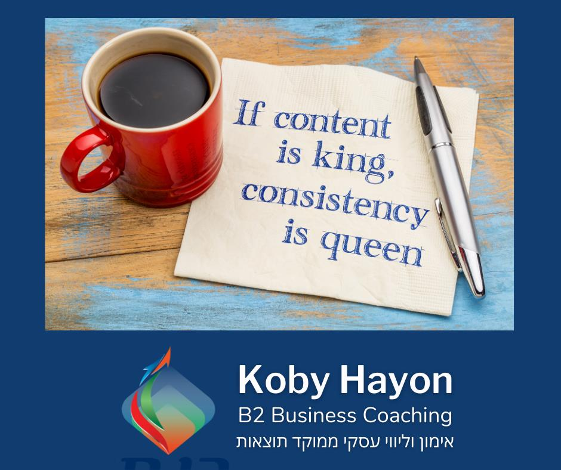

אומרים שהדשא הבריטי הוא הדשא הירוק בעולם, מטופח, מדהים, נראה ללא רבב.
אחד הספורים המפורסמים הוא על שני שכנים, לאחד דשא בריטי כזה ירוק ומדהים, לשני דשא לא משהו, לא ירוק, לא מטופח.
פונה השכן עם הדשא המאפאן, לשכנו הבריטי ומבקש ממנו ללמד אותו את הסוד הגדול של הדשא הבריטי, מסביר לו השכן באריכות מה לעשות, יורד לפרטי פרטי של כמויות מים, דשן, קצירה וטיפוח. ואכן, השכן נצמד להוראות ועושה אחת לאחת את מה שלימדו אותו.
חולפת שנה, כמעט כלום לא השתנה - הדשא הבריטי ממשיך להיות מדהים, השני ? האמת ? לא משהו, נשאר ככה וככה.
חוזר השכן לשכנו הבריטי, בטוח שלא גילה לו את כל הסודות, הבריטי מתחקר אותו האם נצמד להוראות ומגלה שאכן מילא את כל ההוראות.
"אוקי, אתה מצויין" הוא אומר לשכנו,
"עכשיו תטפח את הדשא ככה 300 שנה".
כוחה של התמדה, של עקביות ודבקות במטרה בלי להתייאש גם כאשר לא רואים תוצאות.
אני נתקל בהרבה חברות שעושות כמעט את כל מה שצריך, פועלות לפי הספר, לקחו את היועצים הכי טובים, יודעות בתיאוריה בדיוק מה לעשות, רובן אפילו מיישמות את הדברים בשטח.
אז מה חסר להן כדי להצליח ? עקביות והתמדה.
ככה זה בעסקים, צריך להתמיד כדי להצליח, הרבה פעמים אנחנו זורעים זרעים שנובטים רק אחרי הרבה שנים. זה נכון לכל התחומים, קל וחומר כאשר אנחנו נמצאים במרחב ה B2B.
לוקח הרבה זמן לקצור את הפירות, אנשים חושבים שייקחו את סדנת הלינקדאין שלי, יעשו את כל מה שלימדתי ולמחרת יהיה להם סתם של של לידים ב - inbox ממש לא...
צריך להתמיד ולהמשיך לפעול, להיות עקבי, לחזור על הפעולות, להרחיב את הרשת העסקית ואז פתאום תגלו שהדשא שלכם גם הוא ירוק.
למזלנו, במקרה שלנו לא צריך 300 שנים.
אז מה עושים ? איך מתמידים ?
מכניסים את הדברים לתכנית פעילות לטווח ארוך, בינוני וקצר. מגדירים היעדים והגדרות העשייה, מכניסים ליומן ועכשיו עושים את הדברים פעם אחר פעם, גם אם עדיין לא רואים תוצאות. נשארים עירניים כדי לבחון האם אנחנו בדרך הנכונה, אבל נצמדים אליה כל עוד אין לנו הוכחה חותכת שהיא לא נכונה, לא להתייאש מכישלון, לא לוותר גם אם זה לא עובד כפי שציפינו. מצליחנים הם אותם שהמשיכו במקומות שאחרים ויתרו והתייאשו.
אז מה היה לנו כאן ?
- אחד בריטי ש 300 שנים מטפח את הדשא.
- אחד שכן שלומד להיות עקבי.
- הצלחה שמסתתרת מתחת לעקביות שלנו.
- לשחק ב B2B דורש עקביות.
- לעשות, לעשות, לעשות.... ואז עוד לעשות.
- לא לתת לכשלונות לרפות לנו את המוטיבציה.
- הצמדה ועקביות = הצלחה לטווח ארוך.
מוזמנים להגיב וכמובן שלשתף הלאה.
רוצים ליישם את זה בעסק שלכם? אימון עסקי
פורסם במקור בבלוג שלי ב-BizMakeBiz.